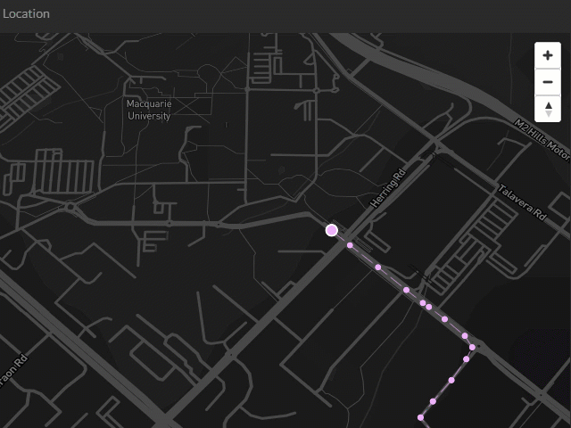

Tracking Bus

Raestros de transporte en tiempo real
Sigue cada uno de tus camiones de transporte de personal
Programa rutas y verifica su cumplimiento en tiempo real o histórico
Recibe alertas pertinentes sobre las rutas de tus camiones
Registra cada abordaje de los pasajeros resultado del chequeo de sus propios gafetes
Monitorea el aforo de cada camión en tiempo real o histórico
Entiende las necesidades de tu cliente, realiza mejoras en tu servicio y optimiza el uso de tus camiones de transporte de personal